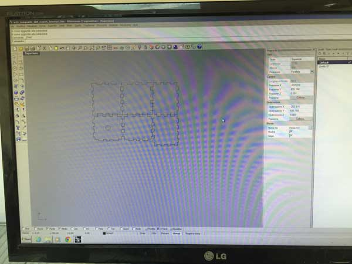

Lesson n. 9:Molding and Casting
The assignment of the week is to design a 3D mold, machine it, and cast parts from it.
Ice Cube Yourself
Among the many workshops organized by Opendot there was "Ice Cube Yourself" in collaboration with Andrej Boleslavsky, an artist from Prague.
The goal of the workshop was make a mold to realize ice cubes with the shape of its face, starting from a 3d scanning.
For 3d scanning we used the same procedure of the week 5, but this time we used the new version of Kinect: this has a resolution three times greater than the first, but it is only compatible with Windows 8.1.
The interface of the scanning software is simple and intuitive, and allows you to adjust the scanning parameters according to environmental requirements.

After scanning all the participants, we have modified the mesh obtained in order to retain only the faces of the people.
These are the faces obtained:
For 3D print the faces and reach results of higher level, instead of using the Prusa, we used the DWS Digital Wax: this SLA printer has an greater accuracy than the FDA printers, but the time of printing is more long.
The software of DWS is a bit more complicated than those seen until now, which is understandable given the precision applications that has this machine.
The printer has a print speed of about 1 cm / hour (the height of the model) but the results are noticeably better than the Prusa (obviously).
The objects once outside the printers are not yet ready, must be first cleaned using pure alcohol to remove excess resin
then be removed from the plate of the printer using an appropriate "comb"
and finally, should be placed in a special UV-rays oven to permanently solidify the resin on the surface.
This is the result of objects once out of the oven:
Once ready the objects we started working on how to make the mold. We made a box with laser cutting in which to place the faces and then pouring the silicon.

Once closed and sealed box we started to prepare the silicone. since the final use of the mold will be with ice, we used Smooth-SIL® 940 that is suitable For food and related application. This product consists of 2 parts: the silicone and a catalyst. In this case, using Smooth-Sil® 940 the 2 components are mixed 100A (silicone) : 10B (catalyst) by weight.
When mixed evenly the two components we poured the silicone in the mold.

Once past 24 hours, ie the "curing time", the mold is ready to be used and can be removed from the box..
We poured water into the mold, and we put it in the freezer, and this is the result:
Using water the details were lost due to transparency, so we made another attempt using coffee:
Milling a Mold
As a task of the week, we had to create a mold, by milling a block of wax. To do this, I chose a 3D model easy to implement, I imported in MeshLab and simplified to make the file more light
Once the file is exported from MeshLab, I imported in Rhino, where I started to work to realize the positive mold, which will go then milled into the wax. First I divided the mesh into 2 parts, so you have two molds at the end, and placed them on two surfaces on which I applied on one side 4 cylinder and on the other 4 holes: these elements will then serve, once It made the mold, to match them.
Then I created the walls of the block of wax, so as to keep separated the two blocks.
Once ready the model, I exported as ".stl" and imported PartWork3D to prepare files for milling. First, we set the orientation and size of the model (which in my case are the dimensions of the material).
Subsequently you have to set the size of the material (which as mentioned above are the same with those of the model), the origin and the eventual tab.
Once finished setting measures of model and material, we move to the development of the toolpath, one for roughing and one for finishing.
First, it is estimated that of roughing. For this work, I used a 1/8 inch drill bit, with the following parameters:
- Pass Depth: 0.1 inches
- Stepover: 0.05 inches
- Spindle Speed: 10000 r.p.m.
- Feed Rate: 15 mm/s
- Plunge Rate: 8.0 mm/s
- Rapid Cleareance Gap: 5.0 mm
- Machining Allowance: 0,5 mm
- Strategy: Z Level --> Raster X
Once finished with the roughing, I switched to calculating the finishing toolpath, this time using the following parameters and a 3 mm ball nose tip:
- Stepover: 0.3 mm
- Spindle Speed: 10000 r.p.m.
- Feed Rate: 10.0 mm/s
- Plunge Rate: 5.0 mm/s
- Rapid Cleareance Gap: 5.0 mm
- Raste Angle: 45 degrees
Once processed both toolpath, I've exported and got ready to mill the wax block. I set the block to the work plane, using pieces of wood in each side.
Once secured to the block plan, I imported the roughing toolpath and I did start
This is the result after the roughing
Immediately after finishing the initial processing, I imported and started the finishing toolpath
This is the result after the finishing
Once finished, I cleaned the block by any remnants of wax and I started to prepare the silicone rubber to obtain the mold.
The silicone rubber is obtained by mixing two components: the first or the rubber itself and the second which is a hardener.
The two components are mixed according to the following proportions: 100 silicone rubber: 5 hardening.
Once prepared the proportions, we must quickly stir and pour into the mold, as more time passes the more rubber hardens.
After ten hours the mold is ready to be removed from the block of wax, this is the obtained result:
Before pouring the resin into the mold just obtained, I created a small box of plywood with the laser cutter, in order to keep the 2 mold applies the mold united in a uniform manner.

When the mold and the box to contain it are ready, I mixed the two components of the resin (50% part A - 50% part B) and the I casting in the mold

After half an hour the resin is already cured, and you can proceed to open the mold
This is the final result